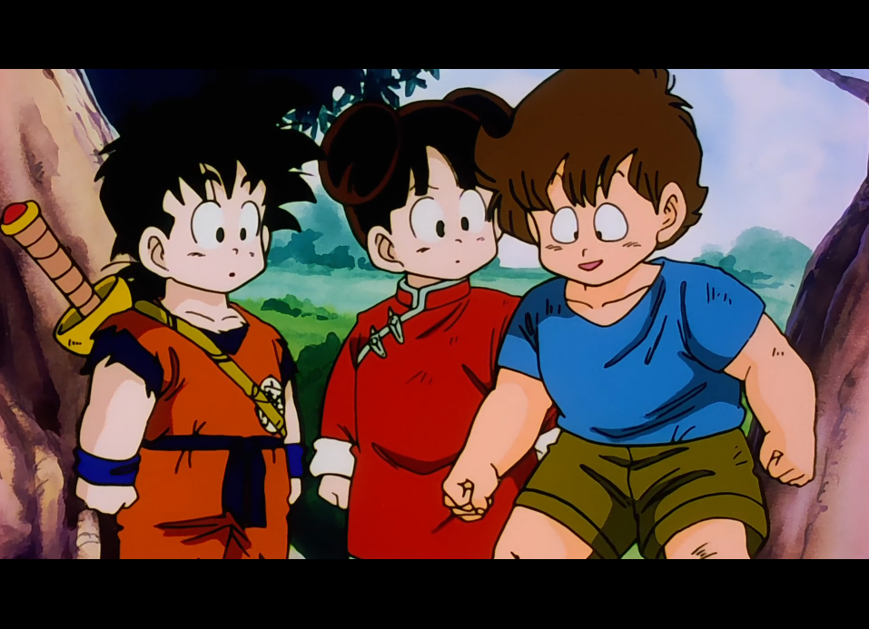

SAGA DES SAIYANS
Épisode 16 : Le Village abandonné - 走れ悟飯！チチの待つなつかしのパオズ山
Une fois la tempête passée, Son Gohan échoue dans un village abandonné où ne survivent plus que des enfants orphelins. Ceux-ci l’accueillent chaleureusement parmi eux. Chaque jour, des employés d’un orphelinat tentent de les emmener, mais les enfants parviennent à leur résister grâce à l’autorité et au courage d’un grand garçon qui veille sur eux.
Un jour pourtant, les employés reviennent accompagnés de policiers. Les enfants se défendent du mieux qu’ils le peuvent, mais le grand garçon finit par comprendre que la partie est perdue : il estime qu’il vaut mieux pour les plus petits avoir un toit et être nourris. Il décide alors de s’enfuir avec Gohan, qu’il raccompagne jusqu’à proximité de chez lui. Gohan arrive devant sa maison et aperçoit sa mère, mais il se retourne et voit Piccolo qui l’attend. Il comprend alors qu’il doit poursuivre son entraînement pour être capable d’affronter les guerriers de l’espace.
